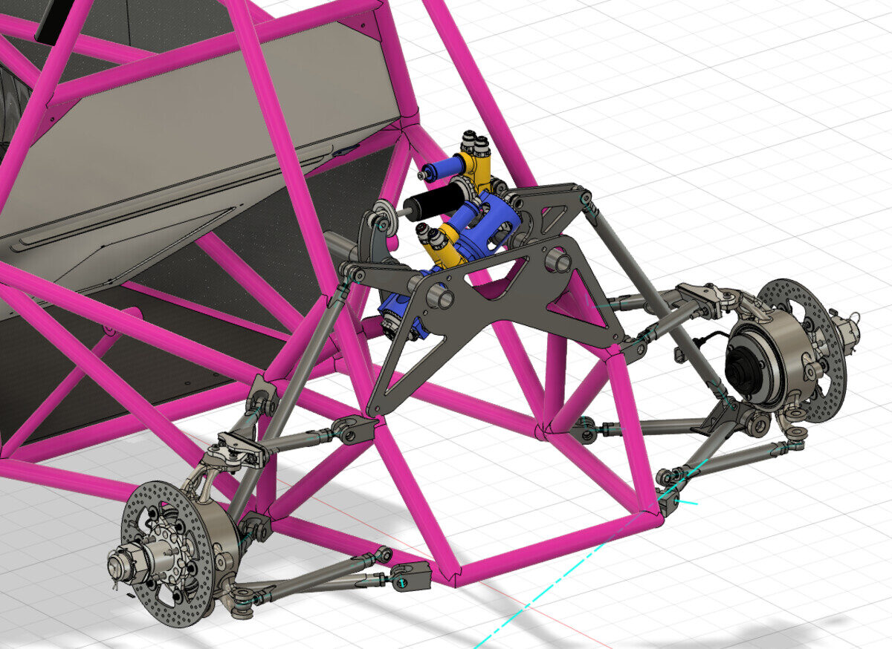
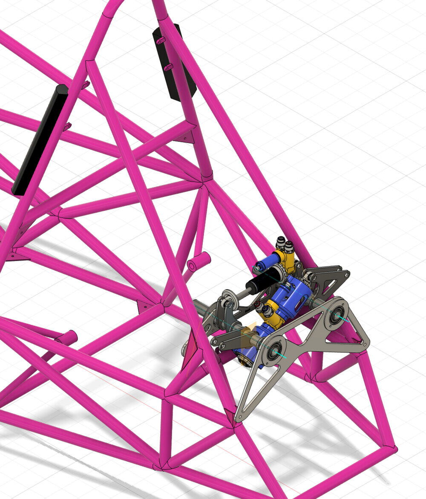
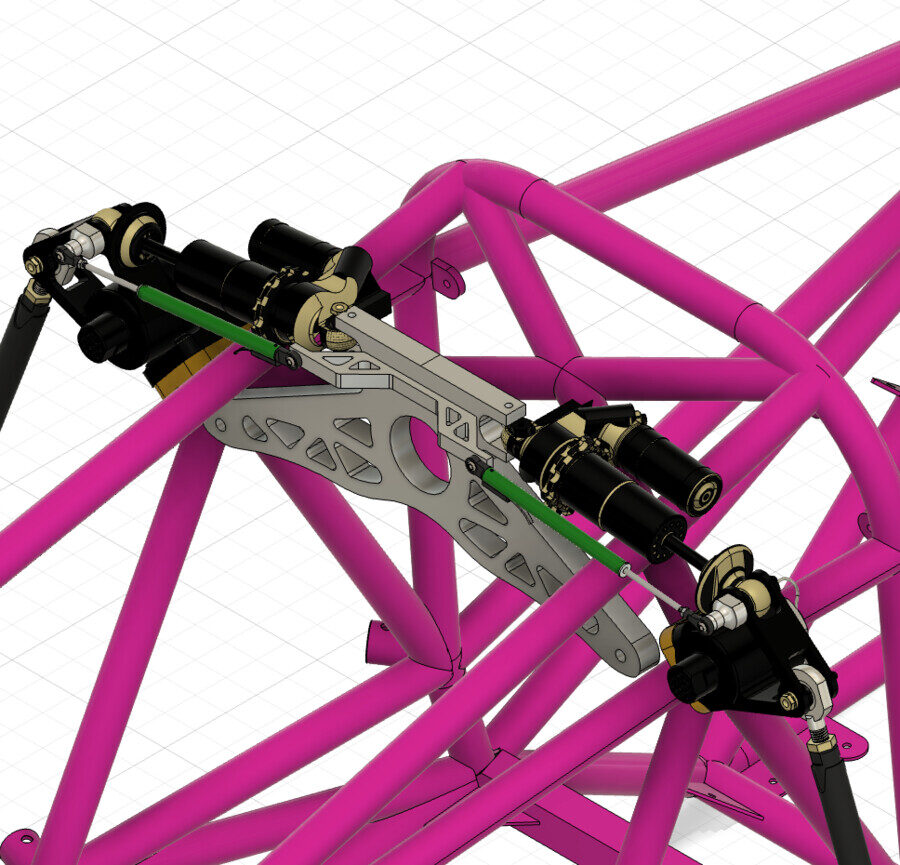
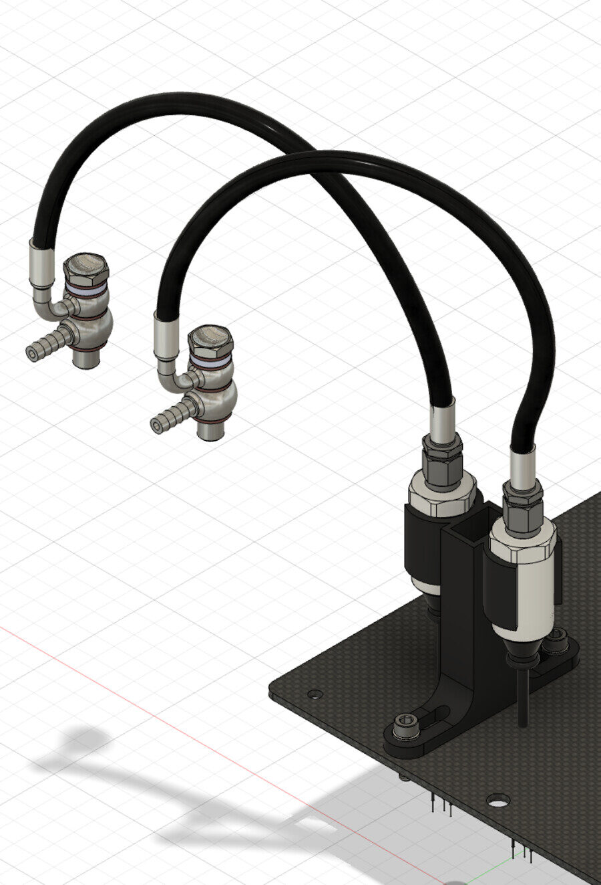
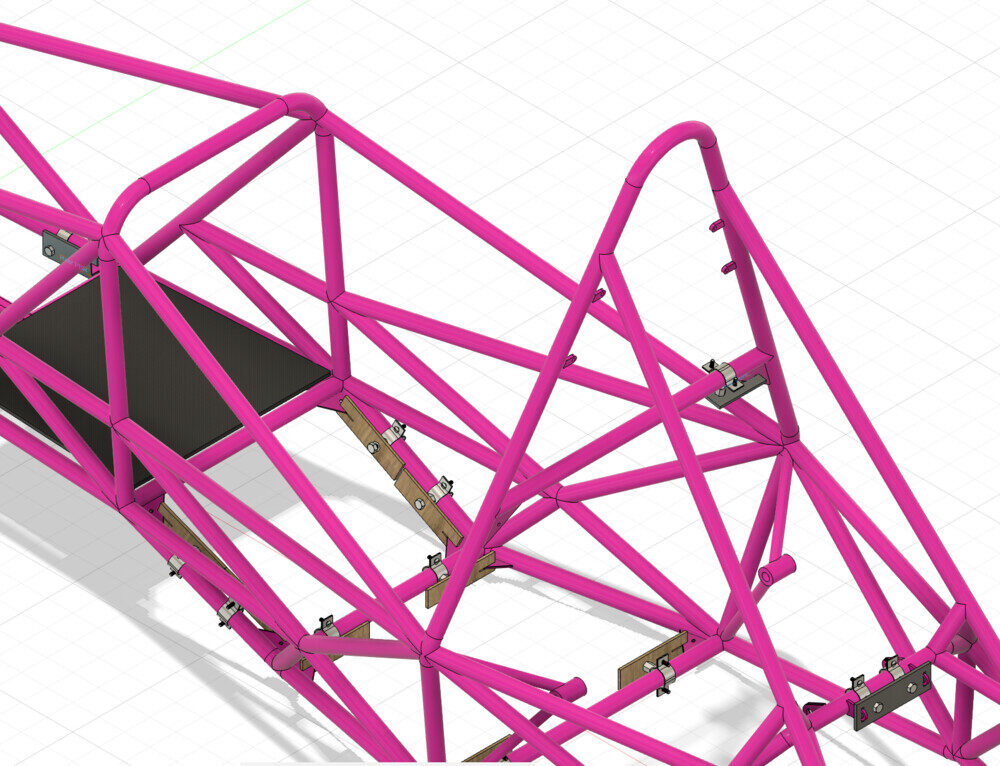
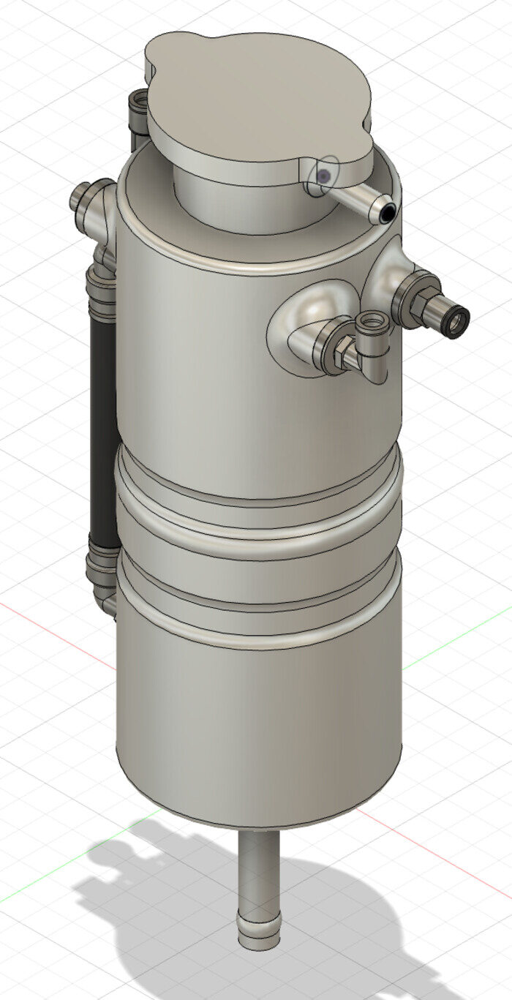

Rear suspension and parts for manufacture
Separating heave and roll lets you tune pitch and ride height without changing roll stiffness. I designed the rear suspension around Multimatic heave and roll dampers to do that.
Before anything was made, I built a moving kinematic model in Fusion 360 to check the rocker motion and clearances in pure heave and in pure roll.
Parts for a student workshop
Many of my early parts had to be made by students, fit a crowded chassis and survive a race weekend: suspension travel and brake pressure sensor mounts for the data system, jigs to hold chassis tabs for welding, and a cooling tank I reverse-engineered and modelled.





